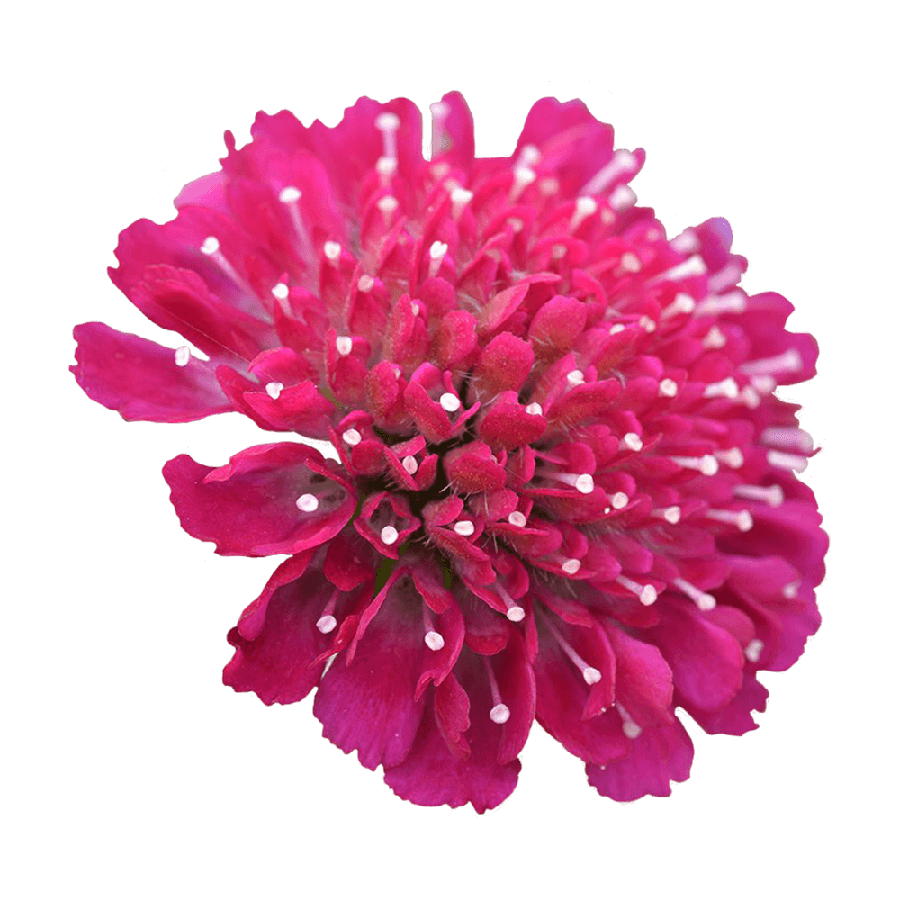

Kameron is a reworking and fusing of several classic Slab Serif and Egyptian type forms from the early to mid Twentieth Century.
Font available from Google Fonts.
Knautia Macedonia is a long blooming perennial in the garden. These beautiful plants display large amounts of dark pink to almost red/crimson pin-cushion blooms.
The foliage of growing Knautia plants is light, and cut beautifully. They are not to be planted on their own and must have other Knautia's around them so they look “like they belong”.
These popular flowers are highly attractive to bees and butterflies.